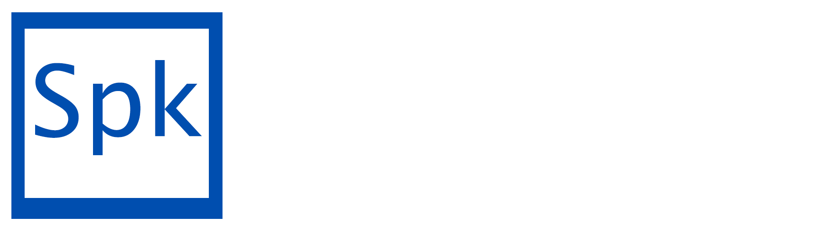

Community
Try ㅤ Special Key
Docs
Special Key is a dynamic, fast and object-oriented programming language for building versatile and fast applications! It is in heavy develpoment now, but ready to try out!